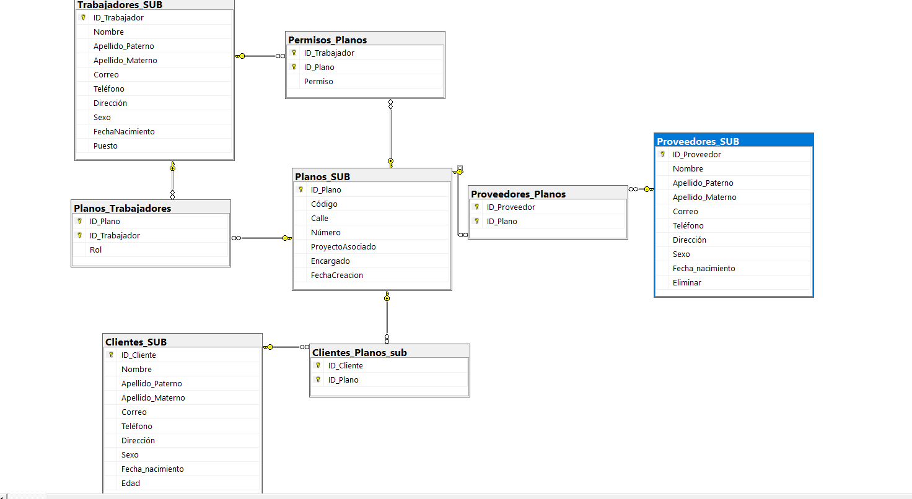

⬅ Volver al inicio
Planos

El subsistema de Planos es esencial para la constructora, ya que permite registrar, consultar y actualizar toda la información relacionada con los planos de construcción utilizados en los proyectos.
Su función principal es mantener un control organizado sobre los datos de los planos, garantizando que la información técnica esté disponible y actualizada, lo que facilita una mejor coordinación en la ejecución de las obras y una comunicación efectiva entre el equipo de trabajo y la dirección.
Campos de Planos
Los principales campos que se registran para cada plano son los siguientes:
| ID Planos |
Código |
Calle |
Teléfono |
Número |
Proyecto asociado |
Encargado |
Bloquear Código |
Eliminar Código |
| Código único que identifica a cada plano dentro de la base de datos. |
Código de referencia del plano. |
Calle donde se llevará a cabo el proyecto. |
Número de contacto del encargado del proyecto. |
Número de identificación del plano. |
Nombre del proyecto asociado al plano. |
Nombre del encargado del plano. |
Opción que permite bloquear el código del plano para futuras modificaciones. |
Opción que permite eliminar el plano del sistema cuando ya no sea necesario. |
Permisos por rol
Arquitecto:
El arquitecto debe de ser capaz de gestionar los planos de construcción a través de su registro, consulta, actualización y eliminación, con el fin de garantizar el control y disponibilidad de la información técnica. Sus responsabilidades incluyen:
- Crear y mantener un repositorio actualizado de todos los planos de proyecto.
- Colaborar con ingenieros y supervisores para asegurar que los planos reflejen adecuadamente el trabajo en el sitio.
- Validar la implementación de los diseños arquitectónicos en los proyectos.
Supervisor:
El supervisor debe ser capaz de registrar, consultar, actualizar y eliminar planos, asegurando que la información técnica esté siempre organizada, confiable y al día. Su responsabilidad principal es mantener el control total sobre los planos para que estos sean accesibles y útiles durante todas las etapas del proyecto. Sus tareas incluyen:
- Revisar y aprobar los planos antes de su implementación.
- Coordinar el acceso a los planos para el equipo de trabajo.
- Monitorear el uso y las modificaciones de los planos en el sitio de construcción.
Ingeniero:
El ingeniero tiene la función de consultar y actualizar planos, garantizando que los cambios técnicos queden reflejados de forma oportuna y precisa. Esto permite trabajar con información actualizada en campo y coordinar las actividades constructivas de manera eficiente. Sus responsabilidades incluyen:
- Verificar que los planos cumplan con las normativas y estándares aplicables.
- Colaborar con el arquitecto en la interpretación técnica de los planos.
- Implementar cambios y actualizaciones según sea necesario en el proceso constructivo.
Objetivo del Subsistema
Asegurar un control integral y actualizado de los planos de construcción, dentro de la base de datos evitando errores en obra, reduciendo riesgos por información desactualizada y garantizando que todos los responsables cuenten con los documentos técnicos necesarios en el momento oportuno.
Requerimientos por usuario
Requerimientos Para la gestión de planos
- Crear un plano ingresando: Código, calle, número, proyecto asociado y encargado.
- Acceder a un plano existente mediante su ID o código.
- Actualizar la información del plano: calle, número, proyecto asociado y encargado.
- Consultar el estado de los planos: verificación de la última actualización y acceso.
- Eliminar un plano que ya no sea necesario.
- Solicitar la creación de nuevos planos o modificaciones a los existentes.
Relación con otros subsistemas
El subsistema de planos está directamente relacionado con:
- Proyectos: Asocia cada plano con los proyectos en los que se utilizan.
- Trabajadores: Permite gestionar la información de los trabajadores que utilizan los planos en sus tareas.
- Finanzas: Conecta con los costos asociados a la implementación de los planos en los proyectos.
Diseño de la base de datos del subsistema
Base de Datos del subsistema
Responsable del subsistema
- Leilany Aislinn Sanchez Reyes (230110166@itsoeh.edu.mx)